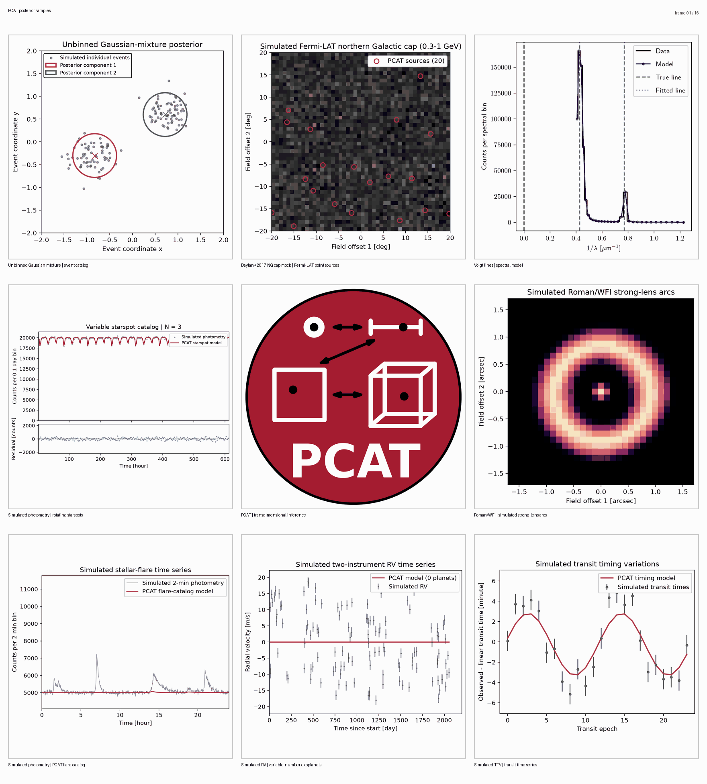

PCAT documentation
The Probabilistic Cataloger (PCAT) is a hierarchical Bayesian inference framework for Poisson-distributed images, spectra, photon events, and other data. It supports both fixed-dimensional inference and transdimensional inference over metamodels whose candidate models can have different numbers of elements. The sampler and maintained examples are available in the PCAT GitHub repository.
PCAT was introduced by Daylan, Portillo, and Finkbeiner (2017) in ApJ, 839, 4. A later application to strongly lensed systems is Daylan et al. (2018), ApJ, 854, 141. Other published applications include Portillo et al. (2017), Feder et al. (2020), Butler et al. (2022), Feder et al. (2023), and Hall et al. (2026).
PCAT supports arbitrary user-supplied likelihood functions, a unified Poisson image likelihood with point, extended, and lensed components, spectral-line models, time-series flare catalogs, and Keplerian radial-velocity catalogs. It also runs fixed-dimensional models through the same sampler and persistence pipeline. Its transdimensional models infer the number and parameters of catalog elements jointly. Simulated and supplied data, population-level priors, posterior catalog summaries, convergence diagnostics, static figures, and posterior animations use a shared pipeline.


The animation shows nine changing inference views, including unbinned mixtures, simulated gamma-ray point sources, Roman strong-lens arcs, observed JWST/MIRI line catalogs, radial velocities, transit timings, and stellar-flare photometry. Time-series and histogram axes remain fixed across frames, and the GIF uses one shared color palette. Only the JWST/MIRI spectrum uses observed data.
User guide
Scientific scope
PCAT represents a metamodel as the union of models with different numbers of elements. Each element is a group of parameters that appears or disappears together, such as the position and flux of a point source or the parameters of a spectral line. Fixed-dimensional parameters describe shared quantities such as backgrounds, population hyperparameters, or instrumental response.
Within-model proposals update existing parameters. Birth and death proposals move between catalog dimensions while respecting detailed balance. Individual element labels are exchangeable, so scientific conclusions should generally use population summaries, condensed catalogs, associations to reference objects, or predictions in data space rather than raw element indices.
Current status
PCAT is research software under active development. Reproducible analyses should record the repository revision, complete run configuration, random seeds, and the final serialized state. The output tree stores these products together for each run.